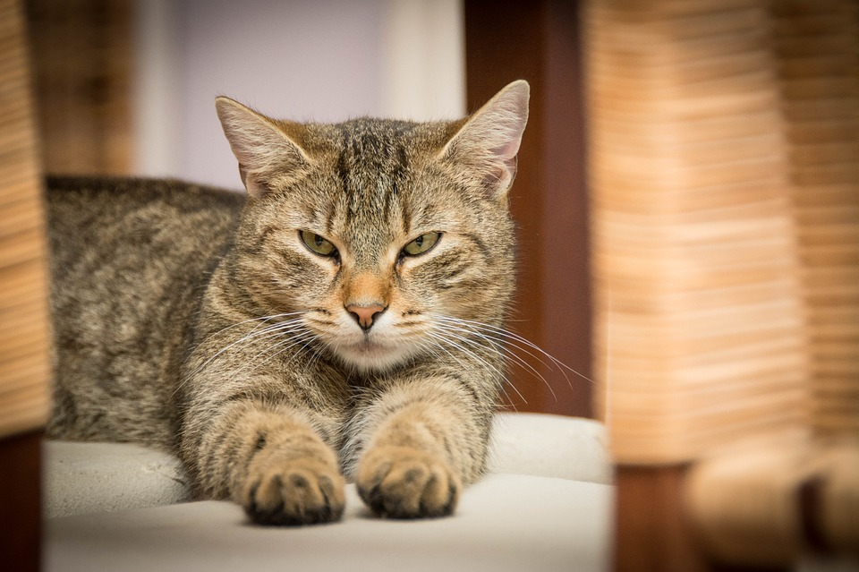

ABOUT US
Durham House of Pets was founded in 1955 by Mr. John Smith. Smith lived in Dover, NH his entire life on
his father's farm, mostly responsible for caring for the animals. Not soon after he began renting out
a store on Main Street in Durham, formally a smoke shop, in hopes of selling pet products to the local residents
and college students. Smith retired in 1995, handing the business over to his son John
Smith II. At first the store only sold dogs and cats but has since expanded to selling snakes and fish.
The family has continued providing supplies for pets such as food, toys, and cages/tanks for years since.
In additional to the original Durham location there are also two branches in Nashua, NH and Hampton, NH. The
corporate office exists above the store in Durham.
|
WHY US?

Durham House of Pets is a family business so we can provide personal customer service that
other larger corporations cannot. We care greatly about all animals and want to ensure your pet gets the right
products to live a happy and healthy life. To us, you and your pets are family not just another customer, so we
want you to feel confident you are getting the best services at the best prices. However, being a smaller family
owned company has not stopped us from being able to provide the best quality products. If you love
your pets, like we know you do, get them the best stuff from Durham House of Pets.
|